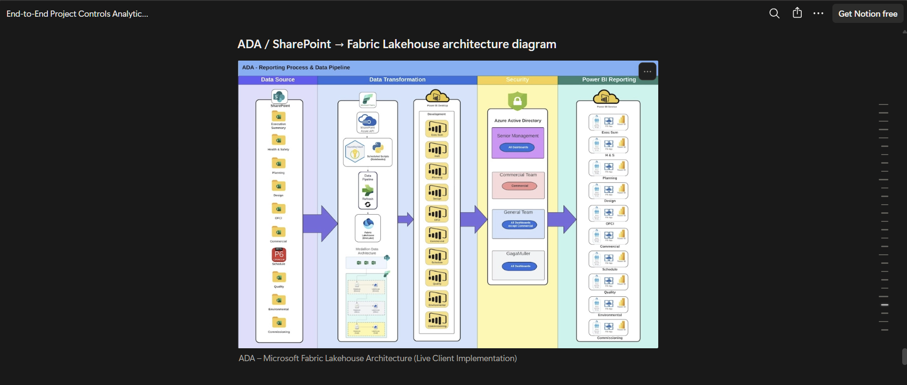
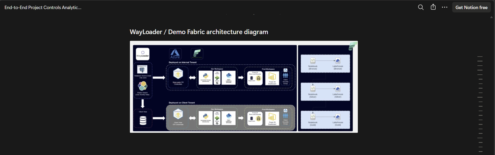
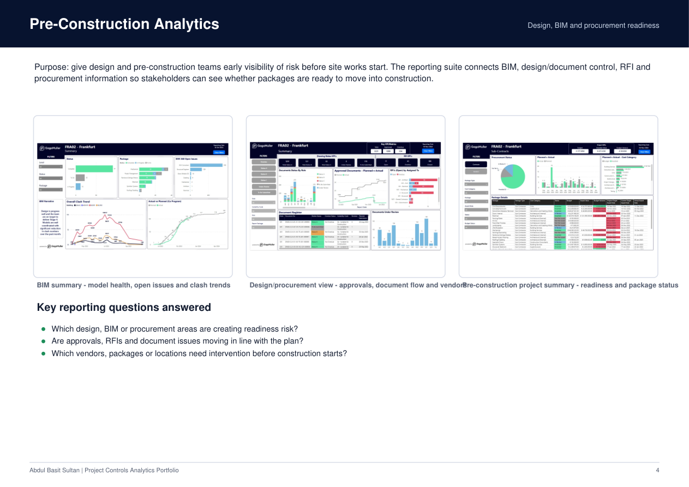
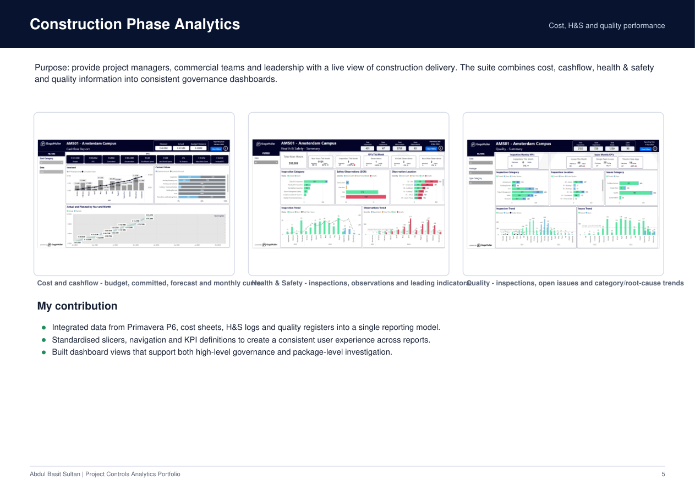
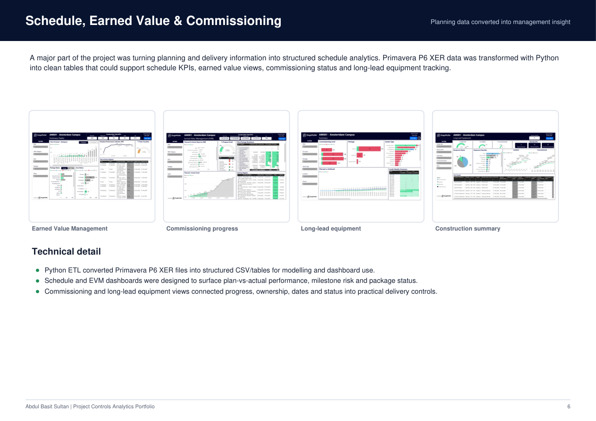
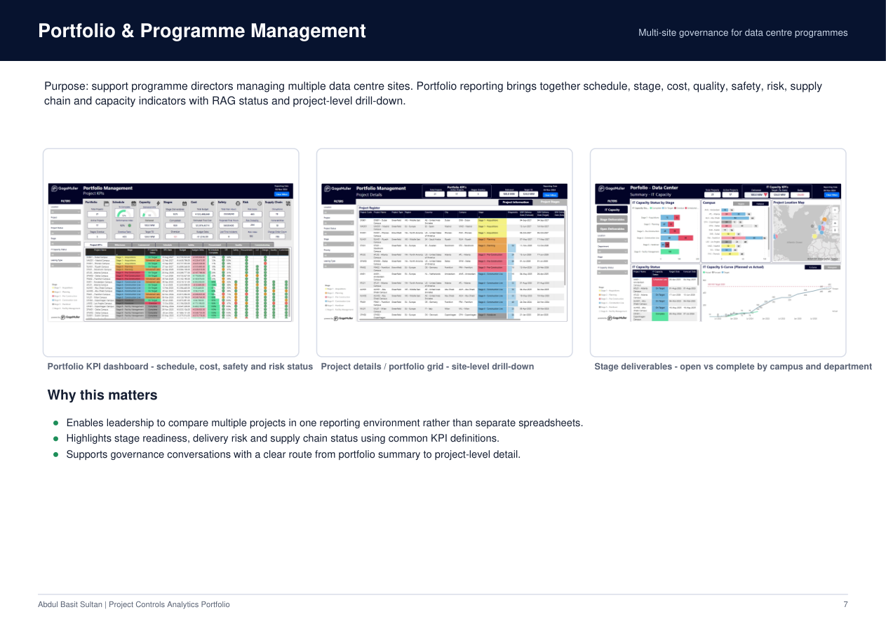

General BI & Analytics
For BI Developer, Analytics Engineer, Data Analyst and Reporting roles where the focus is Power BI, SQL, Python, Microsoft Fabric, and delivering trusted reporting at scale.
View projects →Business Intelligence Developer · Analytics Engineer
Power BI, Microsoft Fabric, SQL and Python across UK and Ireland client environments. From data pipelines to boardroom dashboards. MSc Data Science & Analytics, University of Hertfordshire.
About
I got into data during my Computer Science degree when a module on Data Warehousing clicked something into place. Seeing how star schemas and snowflake models sit behind the numbers on a dashboard, and how those numbers actually drive business decisions, made me want to work at that intersection of technical and meaningful.
Since graduating I've spent over three years as a BI Developer at GagaMuller Group, building end-to-end reporting solutions for clients including Google, NTT Data, ADA, Glenveagh Homes, Dublin City Council, and Mace. The work has ranged from Python-based Primavera P6 data processing and Microsoft Fabric Lakehouse architectures, through to client-facing Power BI dashboards used in governance meetings and senior leadership reviews.
I care about making data work for the people who use it. Not just technically sound, but clear enough that a project manager or commercial director can open a dashboard and immediately see what matters. That balance between engineering rigour and human usability is what I enjoy most about the work.
I'm currently completing an MSc in Data Science and Analytics at the University of Hertfordshire, focusing on machine learning and applied analytics. I'm open to BI Developer, Analytics Engineer, Data Analyst, and Reporting Engineer roles across any industry. The problems I've solved in construction translate directly to finance, tech, retail, and professional services.
Portfolio
The same core abilities in data modelling, pipeline engineering, Power BI and stakeholder delivery, applied across different industries and audiences.
For BI Developer, Analytics Engineer, Data Analyst and Reporting roles where the focus is Power BI, SQL, Python, Microsoft Fabric, and delivering trusted reporting at scale.
View projects →Specialist work in schedule, cost, programme, H&S, and portfolio reporting built for construction, infrastructure and project controls environments.
View projects →BI & Analytics Portfolio
These projects span Microsoft Fabric architecture, reporting automation, data modelling and stakeholder-facing Power BI, built across client engagements in the UK and Ireland.
The problem: project data was scattered across multiple SharePoint environments with no consistent structure, making reporting unreliable and time-consuming to maintain.
What I built: led an end-to-end migration into Microsoft Fabric, designing a medallion Lakehouse architecture and writing Python ingestion and transformation scripts to consolidate and structure the data. Built curated datasets that fed directly into Power BI.
The result: a single, trusted reporting environment that eliminated duplicate spreadsheets, improved reporting consistency, and gave the team analytics they could actually rely on in client-facing meetings.

The problem: NTT Data's project schedule reporting was manual and fragmented, with no clear visibility of milestones, critical path, or delivery risk across the programme.
What I built: engineered a full pipeline extracting and processing Primavera P6 XER data in Python, transforming it into structured datasets and modelling key schedule and progress metrics. Delivered Power BI dashboards used directly in project manager and client governance meetings.
The result: clear, consistent schedule visibility across the programme. Milestone tracking, slippage analysis, and delivery performance reporting that stakeholders trusted and returned to every week.
The problem: reports were refreshed manually, meaning stakeholders often had stale data in their dashboards without knowing it.
What I built: automated the refresh cycle using Power Automate to detect file updates in SharePoint and trigger downstream Power BI refreshes, ensuring dashboards always reflected current data without manual intervention.
The result: reporting became reliable and self-maintaining. Stakeholders stopped asking "is this up to date?" and started using the dashboards as their single source of truth.
The problem: the internal WayLoader product had no structured reporting layer, making it difficult to track product performance or communicate progress to stakeholders.
What I built: engineered an automated analytics solution using Microsoft Fabric Data Factory, Lakehouse, and Pipelines. Built ingestion, transformation, and reporting automation that surfaced product performance metrics in Power BI.
The result: a repeatable, low-maintenance reporting platform that gave the product team visibility into performance without manual data preparation.
Reusable delivery thinking
Across client engagements I developed reusable ingestion, modelling and dashboard structures that could be adapted quickly for new datasets and reporting needs. This reduced onboarding time, improved consistency across reports, and made it easier to maintain and hand over work to client teams.

Construction & Project Controls Portfolio
Specialist reporting built for construction, infrastructure and data centre clients — connecting schedule, cost, quality, H&S, and portfolio data into governance-ready Power BI dashboards.
A unified reporting environment connecting schedule, cost, quality, H&S, procurement, BIM, commissioning and portfolio data into Power BI dashboards used in governance meetings and delivery reviews. Built across client engagements including Glenveagh Homes, Clancy, Mace, and Stack.

Connected BIM model health, document control, RFI tracking and procurement status so project teams could identify readiness risk before construction began, reducing surprises at mobilisation.

Built consistent governance dashboards combining cost, cashflow, health and safety, and quality data used by project managers, commercial teams and leadership in weekly and monthly reviews.

Processed raw XER schedule data in Python to build clean reporting tables for schedule KPIs, earned value metrics, commissioning status and long-lead equipment tracking.

Built portfolio-level views giving programme directors a single environment to compare multiple live projects, covering schedule, stage, cost, quality, safety, risk, supply chain and capacity.
Skills & Tools
Expert
Power BI, DAX, dashboard development, KPI design, management reporting, data storytelling, executive reporting, ad hoc analysis.
Strong
Microsoft Fabric, Lakehouse, Data Factory, ETL/ELT pipelines, SharePoint integration, Power Automate, reporting automation.
Strong
Python, SQL, data modelling, dimensional modelling, data transformation, pipeline development, medallion architecture, data quality.
Expert
Requirements gathering, stakeholder engagement, cross-functional collaboration, commercial reporting, governance design, clear communication to technical and non-technical audiences.
MSc Focus
Machine learning, neural networks, predictive modelling, and applied data science through my MSc in Data Science and Analytics at the University of Hertfordshire, graduating 2026.
Strong
Construction, infrastructure, data centres, project controls, Primavera P6, and programme reporting with transferable experience across tech, finance and professional services.
Get in touch
I'm looking for BI Developer, Analytics Engineer, Data Analyst or Reporting Engineer roles where I can bring strong technical delivery and clear stakeholder communication. Based in London, full right to work in the UK, available immediately.
If you're working on interesting data problems in any industry, I'd like to hear about it.